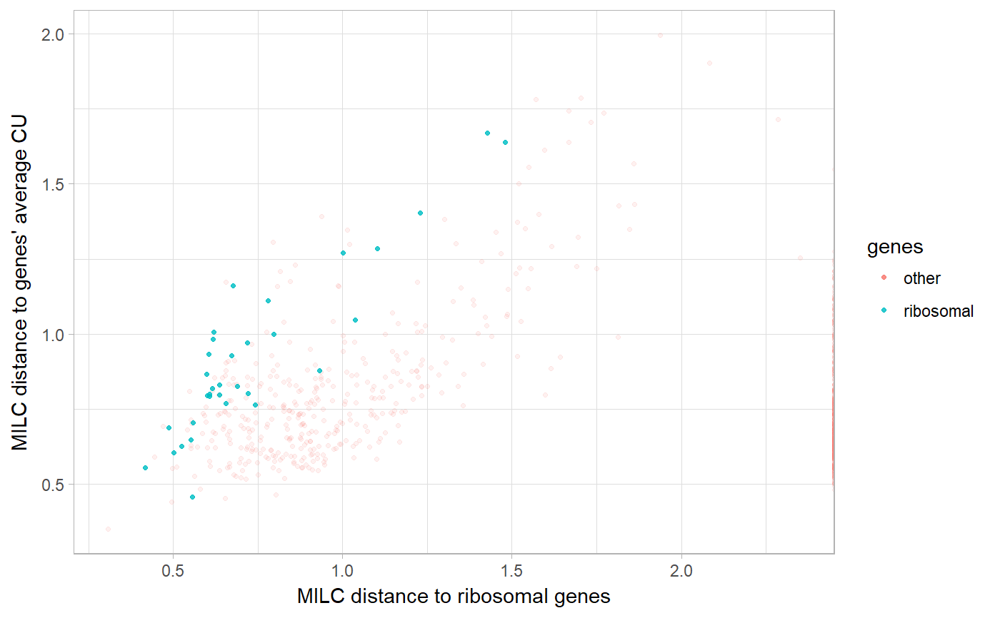

Bplot.RdPlot distances of each gene's CU frequency to specified gene (sub)sets
(given by x and y).
Bplot(x, y, data, annotations = character(), ribosomal = FALSE, reference = list(), alpha = 0.1) # S4 method for character,character,matrix Bplot(x, y, data, annotations = character(), ribosomal = FALSE, reference = list(), alpha = 0.1) # S4 method for numeric,numeric,missing Bplot(x, y, data, annotations = character(), ribosomal = FALSE, reference = list(), alpha = 0.1)
| x, y | Character, both must be in |
|---|---|
| data | A matrix with CU statistic values for subsets of genes in columns. |
| annotations | A character vector giving KO annotations for sequences
for which the CU values were calculated, must be of length
|
| ribosomal | Logical, whether to indicate ribosomal genes in the plot.
Default is |
| reference | A named list of length 1, containing either a logical
vector of |
| alpha | Numeric, between 0 and 1, indicating transparency value for plotting (default is 0.1). |
A ggplot object.
require(ggplot2)#># calculate MILC distance to the average CU of the example DNA sequences, # and to the average CU of ribosomal genes among the example DNA sequences milc <- MILC(LD94, self = TRUE, ribosomal = TRUE) Bplot(x = "ribosomal", y = "self", data = milc, ribosomal = TRUE, annotations = getKO(LD94)) + labs(x = "MILC distance to ribosomal genes", y = "MILC distance to genes' average CU")